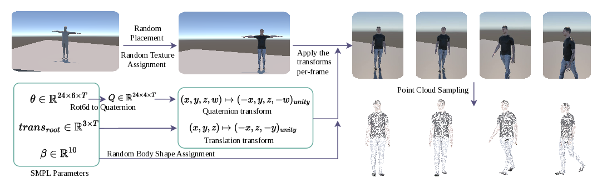
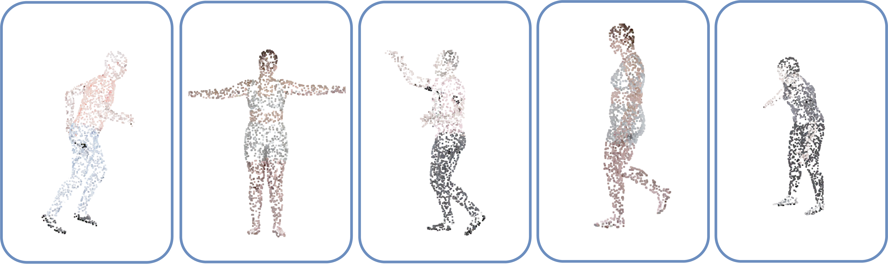
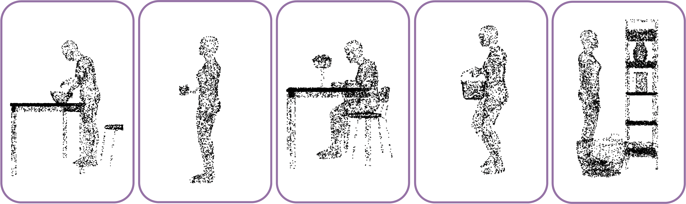
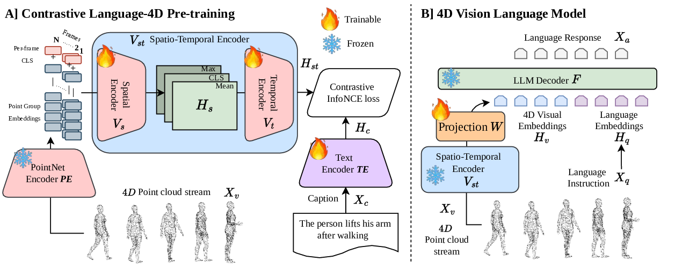
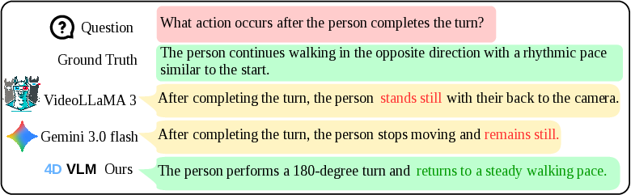

CL4D: Contrastive Language–4D Pretraining for Vision-Language Reasoning in Dynamic Scenes
Abstract
4D understanding and reasoning is a fundamental capability for embodied AI agents operating in dynamic physical environments. However, existing vision encoders are largely limited to static 2D images or 3D point clouds without temporal modeling, or to 2D videos that lack accurate geometric depth reasoning. Consequently, current approaches fail to jointly capture spatial structure and motion evolution in dynamic scenes. We present CL4D, the first foundational 4D vision encoder that directly operates on dynamic point clouds, trained with a contrastive learning objective to align spatio-temporal geometric representations with natural language descriptions. By learning a shared embedding space between text and 4D scene dynamics, CL4D enables zero-shot motion-to-text and text-to-motion retrieval in dynamic environments and serves as a foundational 4D vision encoder for downstream 4D vision–language tasks. Building on this encoder, we introduce 4DVLM, a 4D vision–language model that conditions language generation on dynamic geometric representations. 4DVLM is the first VLM designed to operate directly on 4D point clouds without relying on 2D images, 2D videos, or static 3D point clouds. We train CL4D and subsequently 4DVLM on a newly constructed dataset termed DynAction4D capturing diverse human motions across varying object interactions and scene environments. Extensive experiments across multiple 4D human action benchmarks demonstrate that CL4D achieves state-of-the-art performance, with improvements of approximately ~16.75% over prior methods. Furthermore, 4DVLM outperforms frontier video VLMs such as Gemini and GPT-5 even when these models are provided with RGB video sequences corresponding to the same scenes represented as 4D point clouds for 4DVLM.
DynAction4D Dataset
To facilitate Language–4D representation learning, we introduce DynAction4D, a large-scale dynamic human action point cloud dataset. DynAction4D consists of four distinct segments, each capturing unique dynamic scenarios with paired natural language descriptions:
- HumanOnly: Captures a wide variety of human-only actions (walking, jumping, dancing, etc.) across diverse environments, featuring 23k training and 4k testing sequences.
- ObjInteractions: Focuses on human actions involving object interactions, derived from Humoto. Includes 73 objects and 736 distinct interaction types.
- Cluttered: Places human characters performing various actions in environments cluttered with multiple objects at varying placements and density conditions.
- 4D-VQA: Specifically built for evaluating downstream 4D spatial and temporal reasoning capabilities, generated by prompting Gemini on Unity-rendered video sequences.

Overview of the DynAction4D data generation pipeline.

(a) DynAction4D-HumanOnly samples.

(b) DynAction4D-ObjInteractions samples.
Methodology
Our framework features a two-stage training strategy to bridge 4D scenes (dynamic point clouds) and natural language:
- Stage 1: Contrastive Language–4D Pre-training (CL4D)
A Spatio-Temporal Vision Encoder ($V_{st}$) operates directly on dynamic point clouds $(x,y,z,t)$. It comprises a frame-level Pointnet Point Encoder ($PE$), a Spatial Transformer ($V_s$) modeling global spatial relationships within each frame, and a Temporal Transformer ($V_t$) modeling inter-frame temporal dependencies. These 4D visual embeddings are aligned with text embeddings from a Text Encoder ($TE$) using a symmetric cross-entropy objective. - Stage 2: 4D Large Vision-Language Model (4DVLM)
The pre-trained $V_{st}$ serves as a frozen foundational encoder. Projected 4D visual tokens are fused with Vicuna-7B (LLaVA architecture) to perform complex spatial, temporal, and action-based reasoning over dynamic environments, outputting descriptive language generation.

Overview of the CL4D and 4DVLM framework architecture.
Results & Evaluation
1. Motion-Text Retrieval Results
We adapt prior state-of-the-art 4D encoders using the same contrastive pre-training objective. CL4D consistently outperforms all methods across the three segments of DynAction4D and the real-world RH20T benchmark, showing up to ~16.75% R@1 improvement.
| Dataset Segment | Method | Text-to-Motion Retrieval (R@1 ↑) | Motion-to-Text Retrieval (R@1 ↑) | ||
|---|---|---|---|---|---|
| Batch | Global | Batch | Global | ||
| DynAction4D-HumanOnly | P4Transformer | 53.57% | 3.66% | 58.05% | 5.33% |
| PST-Transformer | 49.09% | 2.69% | 51.73% | 3.34% | |
| Motion PointNet | 51.91% | 2.34% | 55.78% | 3.13% | |
| CL4D (Ours) | 70.32% | 8.07% | 68.62% | 8.02% | |
| DynAction4D-ObjInteractions | P4Transformer | 26.55% | 5.94% | 24.93% | 7.31% |
| PST-Transformer | 30.37% | 8.22% | 25.50% | 7.31% | |
| Motion PointNet | 41.37% | 12.33% | 36.18% | 11.87% | |
| CL4D (Ours) | 49.40% | 23.29% | 46.97% | 22.37% | |
| DynAction4D-Cluttered | PST-Transformer | 30.86% | 0.90% | 33.29% | 0.93% |
| Motion PointNet | 41.71% | 1.23% | 43.24% | 1.53% | |
| CL4D (Ours) | 55.07% | 3.11% | 51.94% | 2.71% | |
2. Visual Question Answering (VQA) Results
For a fair comparison with existing video-based VLMs that cannot process raw point clouds directly, we render the 4D point clouds into mesh videos. Equipped with a foundational geometry-aware encoder, our 4DVLM outperforms frontier video models across all metrics, validating the importance of 3D spatial grounding.
| Method | BLEU ↑ | ROUGE-1 (F1) ↑ | ROUGE-2 (F1) ↑ | ROUGE-L (F1) ↑ | METEOR ↑ | BERTScore F1 ↑ | SimCSE ↑ |
|---|---|---|---|---|---|---|---|
| VideoLLaMA 3 | 0.0437 | 0.3382 | 0.1174 | 0.2951 | 0.2481 | 0.4317 | 0.8158 |
| Gemini 3.0 Flash | 0.0447 | 0.3389 | 0.1156 | 0.2812 | 0.2673 | 0.4057 | 0.8009 |
| Gemini 3.1 Pro | 0.0300 | 0.2763 | 0.0923 | 0.2427 | 0.1933 | 0.3736 | 0.7690 |
| GPT-5 | 0.0184 | 0.1935 | 0.0403 | 0.1612 | 0.1347 | 0.3191 | 0.7432 |
| 4DVLM (Ours) | 0.0729 | 0.3857 | 0.1563 | 0.3324 | 0.3152 | 0.4459 | 0.8189 |
3. Qualitative Analysis

Comparison of generated outputs from our 4DVLM against Video VLMs on sample DynAction4D VQA instances.
Paper PDF
BibTeX
@article{hewagamage2026cl4d,
title={CL4D: Contrastive Language--4D Pretraining for Vision-Language Reasoning in Dynamic Scenes},
author={Hewagamage, Kumal and Senavirathne, Isuranga and Amarasinghe, Sasika and Gallella, Hasitha and Weerakoon, Dulanga and Subbaraju, Vigneshwaran and Rodrigo, Ranga},
journal={European Conference on Computer Vision (ECCV)},
year={2026}
}